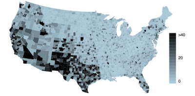
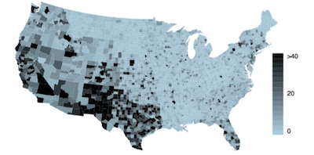
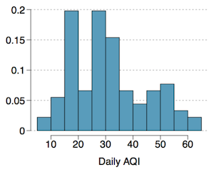
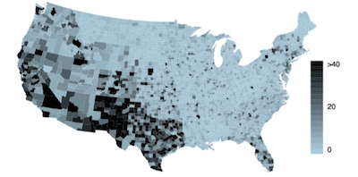

Due: Monday, July 11, 9:30am
Submission: Submit three files on Sakai:
Complete Introduction to data visualization with R and RStudio and submit your R Markdown (Rmd) and HTML files.
Find two examples of data visualization online, one good and one bad. Describe why the good one is good (and it’s also ok to suggest further improvements) and why the bad one is bad. Make sure to include the visualizations, and provide citations for them.
The 2010 General Social Survey asked the question, “After an average work day, about how many hours do you have to relax or pursue activities that you enjoy?” to a random sample of 1,155 Americans. The average relaxing time was found to be 1.65 hours. Determine which of the following is an observation, a variable, a sample statistic, or a population parameter.
(a) An American in the sample.
(b) Number of hours spent relaxing after an average work day.
(c) 1.65.
(d) Average number of hours all Americans spend relaxing after an average work day.
Office productivity is relatively low when the employees feel no stress about their work or job security. However, high levels of stress can also lead to reduced employee productivity. Sketch a plot to represent the relationship between stress and productivity. (You can sketch this by hand on a piece of paper, take a photo, and insert it in your document, or sketch it on your computer.)
In a class of 25 students, 24 of them took an exam in class and 1 student took a make-up exam the following day. The professor graded the first batch of 24 exams and found an average score of 74 points with a standard deviation of 8.9 points. The student who took the make-up the following day scored 64 points on the exam.
(a) Does the new student’s score increase or decrease the average score?
(b) What is the new average?
Find the mean and the median of the following dataset. Determine whether the mean or the median is a better measure of the center.
(a) 26, 30, 65, 71, 77, 88, 90, 104, 123, 14000
(b) -61, 137, -2, -163, 23, 105, 88, -165, 25, -6
Daily air quality is measured by the air quality index (AQI) reported by the Environmental Protection Agency. This index reports the pollution level and what associ- ated health e↵ects might be a concern. The index is calculated for five major air pollutants regulated by the Clean Air Act and takes values from 0 to 300, where a higher value indi- cates lower air quality. AQI was reported for a sample of 91 days in 2011 in Durham, NC. The relative frequency histogram below shows the distribution of the AQI values on these days. Calculate median AQI, and determine whether the mean or the median would be a better measure of central tendency.

The US census collects data on race and ethnicity of Americans, among many other variables. The histogram below shows the distribution of the percentage of the population that is Hispanic in 3,143 counties in the US in 2010. Also provided is a spatial intensity map.
(a) What features of the distribution of the Hispanic population in US counties are apparent in the map but not in the histogram? What features are apparent in the histogram but not the map?
(b) Describe for which purposes each visualization would be more helpful for.
